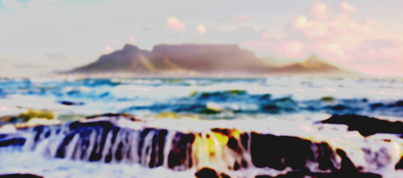
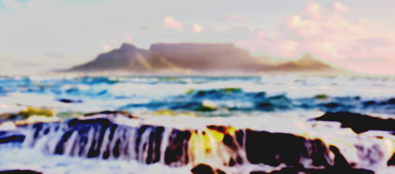

KIBOKO
Follow us:
Follow us:

Daily Plan |
|---|
|
Day 1 Cape Town Arrive at any time. Day 2-3 Cederberg/Gariep River Discover a local vineyard. Camp on a local farm in South Africa. Canoe or jump into the Gariep River. Day 4-8 Fish River Canyon/Namib Desert/Swakopmund Visit Fish River Canyon and Sossusvlei dunes. Optional activities include sand boarding, a dolphin cruise, sky diving, quad biking, or a living desert tour in Swakopmund. Day 9-13 Damaraland/Spitzkoppe/Etosha NP/Windhoek Travel through beautiful desert landscapes and granite peaks. Keep a look out for wildlife on the game drives in Etosha NP from the overland truck before continuing on to Namibia's capital. Day 14-16 Kalahari/Maun/Okavango Delta Stop over in the Kalahari Desert. Optional walk to learn survival skills from the locals. Enjoy a game walk, traditional mokoro (dug-out canoe) rides and birding on an overnight bush camping excursion. Day 17-18 Gweta/Chobe National Park Camp under ancient baobab trees. Take an optional wildlife-viewing boat cruise on the Chobe River. Day 19-24 Livingstone/Lusaka/Chipata Enjoy four nights in Livingstone. Opt to visit to the craft markets and Victoria Falls, or enjoy whitewater rafting, canoeing, or even flying over the falls. Camp on a private game farm near Lusaka. Day 25-28 Lake Malawi Relax on the shores of 'the lake of stars' and visit various lakeside camps. Opt to take a walks, go snorkelling, fish, or tour local villages. Day 29-30 Iringa/Dar Es Salaam Climb out of the Great Rift Valley and view vast tea plantations, then descend down to the Indian Ocean. Day 31-34 Zanzibar Guided tour of a spice plantation and plenty of free time to explore Stone Town and the beach. Option to visit museums, historical sites, markets or enjoy the beach and marine activities like snorkelling, scuba diving and swimming. Day 35-39 Korogwe/Arusha/Serengeti/Ngorongoro Crater Take the ferry to Dar es Salaam. Catch a first glimpse of Mt Kilimanjaro. Enjoy game drives in Serengeti NP and Ngorongoro Crater in 4x4 safari vehicles. Day 40-44 Nairobi/Naivasha/Kampala Hotel stay for two nights in Nairobi, then stop off at the beautiful Lake Naivasha for an included flamingo and hippo spotting boat ride. Cross over the Mau Mau Escarpment to Eldoret and see the sights in Kampala. Day 45 Kalinzu Forest Reserve/Chimp Tracking Experience the Ugandan countryside and finish up at a bush camp in western Uganda. Wake up early the next morning for an included chimpanzee tracking excursion and tea plantation visit. Day 46-48 Gorilla Tracking/Lake Bunyonyi Enjoy a 1-day guided mountain gorilla trek. Opt to go canoeing, fishing, hiking or boating around the lake. Day 49-51 Kampala/Jinja Return to Kampala for an overnight stop, then continue to Jinja. Opt to go whitewater rafting, kayaking down the White Nile River, mountain biking or volunteering with a local project. Day 52-53 Eldoret/Nakuru Cross back into Kenya for a night in Eldoret before a game drive in Lake Nakuru National Park, keep en eye out for black and white rhinos. Day 54 Nairobi Continue onto Kenya and Nairobi—where the tour ends upon arrival in the late afternoon. |